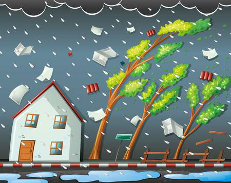

태풍

태풍이란?
태풍이란 중심풍속이 초속 32m 이상인 열대성 저기압
1.태풍 예보 시
1.TV, 라디오, 인터넷, 스마트폰 등으로
2.하천이나 해변, 저지대에
3.비상시 신속한 대피를 위해
4.
기상상황을 미리 파악
하여 어떻게 할지를 준비합니다.2.하천이나 해변, 저지대에
주차된 차량은 안전한 곳
으로 이동합니다.3.비상시 신속한 대피를 위해
응급용품은 미리 배낭
등에 넣어둡니다.4.
정전에 대비
하여 비상용 랜턴, 양초, 배터리 등을 미리 준비해 둡니다.
2. 태풍 특보 시
1.가족, 지인, 이웃과 연락하여
2.침수된 도로, 지하차도, 교량 등에서는
3.공사장, 전신주, 지하 공간 등
4.농촌지역에서는
안전을 확인하고 위험정보 등을 공유
합니다.2.침수된 도로, 지하차도, 교량 등에서는
차량의 통행을 엄격히 금지
합니다.3.공사장, 전신주, 지하 공간 등
위험지역에는 접근하지 않도록
합니다.4.농촌지역에서는
논둑이나 물꼬
를 보러 나가지 않습니다.
3.태풍 후
1.대피 후 집으로 돌아온 경우 반드시 주택 등의
2.
3.돗물이나 저장되었던 식수는
안전 여부
를 확인하고 출입합니다.2.
하천 제방
은 무너질 수 있으니 가까이 가지 않습니다.3.돗물이나 저장되었던 식수는
오염 여부를 확인
한 후에 사용합니다.